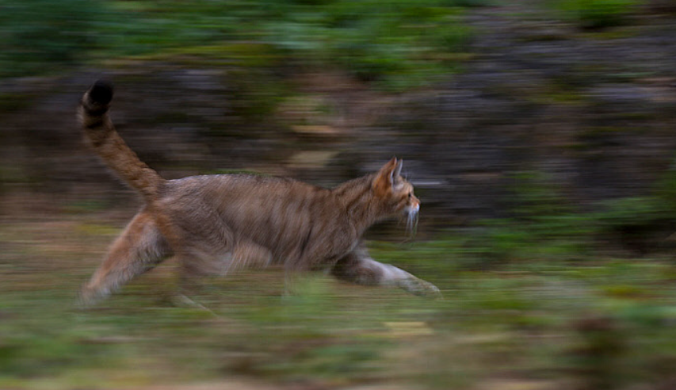

Decides que Mike debe escapar del bosque para salvar su vida.
Mike se da la vuelta y comienza a correr lo más rápido que puede hacia la salida del bosque.
Luego de unos minutos corriendo, Mike ve las luces de la colonia acercarse más y más, con el animal que lo persigue perdiéndolo de vista.
Finalmente, Mike logra escapar con seguridad del bosque, cansado como nunca antes, pero con el alivio de haber sobrevivido.
Mike decide buscar algún lugar en el que pueda dormir y recuperarse, preocupado todavía por los ruidos que han provenido del bosque.
Fin.